Handalfabetet
Så här ser handalfabetet ut (om du tecknar med höger hand – använder du
vänster blir symbolerna spegelvända).


Detta är en kortfattad introduktion, det finns en separat sida med tekniska detaljer. Teckenskrift är en anpassning av det amerikanska ASLWrite (av Adrean Clark, Jules Dameron, Robert Arnold och många andra). Nedan används, för tydlighets skull, ordet ’tecken’ enbart om tecken i teckenspråket, för skrivna krumelurer används ’markör’ eller ‘symbol’.
Idéer och åsikter mottages tacksamt på
<teckenskrift@
Så här ser handalfabetet ut (om du tecknar med höger hand – använder du
vänster blir symbolerna spegelvända).
De olika handformerna betecknas av handsymboler. Här följer en lista av handsymboler, deras handform och det namn som används av Svenskt Teckenspråkslexikon.
Ovanliga handformer (finns med som allofoner i
bokformen av svenskt teckenspråkslexikon) är
ljusare. Svenska symboler är blåa (de finns inte i
ASLWrite, men är byggda på samma principer) – ingen av de egna symbolerna är
satta i sten (än) och förslag mottages tacksamt! (Se även
’Anteckningar om handsymboler’.)
Öppna handformer


sprethand
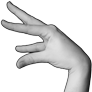

vinklad sprethand (variant)
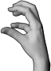

klohand


4-hand
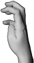

böjd 4-hand (variant)
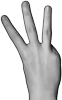

W-hand


böjd W-hand (variant)
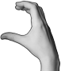
S-hand
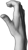

S-hand (variant)


vinkelhand
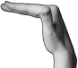

vinkelhand (variant)

flat hand
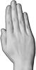

flat hand (variant)
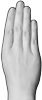

D-hand


flat tumhand
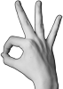
stor nyphand
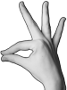

stor nyphand (variant)


stor nyphand (variant)


stor nyphand (variant)


stort långfinger
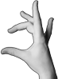

stort långfinger (variant)
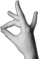

runt långfinger


runt långfinger (variant)

F-hand
Slutna handformer
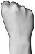
knuten hand
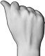

knuten hand (variant)


E-hand
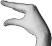

tumvinkelhand
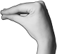
A-hand

O-hand
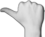

tumhand


tumhand (variant)

Q-hand
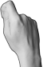

hållhand
Blandade handformer
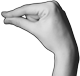

nyphand
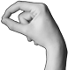

nyphand (variant)
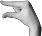

rak måtthand
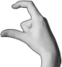

måtthand


måtthand (variant)


krokfinger
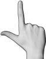

L-hand
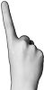

pekfinger
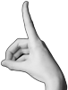

pekfinger (variant)


vinklat pekfinger (variant)


T-hand


T-hand (variant)


långfinger
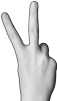

V-hand
?
V-hand (variant)
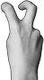

dubbelkrok


dubbelkrok (variant)
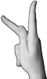
K-hand


X-hand


flyghand
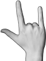

flyghand (variant)
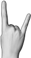

flyghand (variant)
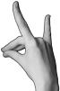

U-hand
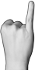
lillfinger
?
lillfinger (variant)
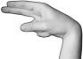
N-hand


N-hand (variant)


N-hand (variant)


N-hand (variant)

M-hand
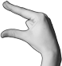

liten tumvinkelhand


liten O-hand
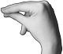

liten O-hand (variant)
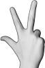

tupphand


tupphand (variant)
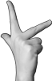

tupphand (variant)
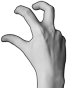

böjd tupphand
Kontaktpunkt visar var (på kroppen eller den andra handen) kontakt sker. Om kontakt sker flera gånger skrivs två (eller fler) punkter intill varandra. Kontakt kan skrivas vid ett specifikt finger, om det är där kontakten sker.
Kontaktpunkten kan också skrivas i tomma luften (utan någon hand eller
annan kroppsdel som kontakten sker på) i dessa fall beskriver den en
rörelse som påminner om kontakt (som om kontakt skulle gjorts mot en
osynlig yta).

’klicka’
Rörelselinjer och slutpunkter
(  etc) visar hur en hand rör sig
(med punkten i slutet). Vilken handform som används skrivs vanligen intill
början av rörelselinjen (men om det är samma handform under hela rörelsen
finns ganska stor frihet i var man placerar symbolen).
etc) visar hur en hand rör sig
(med punkten i slutet). Vilken handform som används skrivs vanligen intill
början av rörelselinjen (men om det är samma handform under hela rörelsen
finns ganska stor frihet i var man placerar symbolen).
Vid upprepad rörelse skriver man en slutpunkt för varje gång rörelsen utförs.
Om handformen förändras under rörelsen skrivs flera handsymboler utefter linjen.
Tvärslutpunkt ( )
används istället för en vanlig slutpunkt för att
understryka att en rörelse slutar väldigt tvärt.
)
används istället för en vanlig slutpunkt för att
understryka att en rörelse slutar väldigt tvärt.
Vertikalmarkör () är ett litet T-format streck i början på en rörelselinje som används (i det neutrala läget) då en rörelselinje beskriver vertikal istället för en horisontell rörelse. Ta en titt på skillnaden mellan ’tallrik’ (horisontell rörelse) och ’cirkel’ (vertikal rörelse) nedan.
Det finns förstås många andra tecken med vertikal rörelse.
Förändringslinjer () ser ut som vanliga rörelselinjer, men visar att en handform förändras utan förflyttning. Vanligtvis används förändringslinjen som understrykning till handformerna ifråga. För att vara extra tydlig att det rör sig om en förändringslinje (utan rörelse) kan man ’spika fast’ linjen med en fixpunkt ().
Följande symboler visar hur två händer rör sig i förhållande till varandra.
Mötande linjer
( )
visar att händerna rör sig mot varandra och möts i mitten. Om
en vertikalmarkör används skrivs den längst ut i de
bägge ändarna.
’träffa’
Skiljande linjer
(  )
visar att händerna först nuddar varandra och sen rör sig i varsin riktning.
Om en vertikalmarkör används skrivs den på mitten
av linjen.
)
visar att händerna först nuddar varandra och sen rör sig i varsin riktning.
Om en vertikalmarkör används skrivs den på mitten
av linjen.
Turmarkör () markerar den
hand som rör sig först vid växelvis rörelse. Turmarkörens lilla snedstreck
riktas alltid in mot tecknets mitt.

’nummer’
Flätmarkör () visar att fingrarna flätas samman.
Korsmarkör () visar att
armarna är korsade.
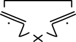
’kram’
Omloppsmarkör ( ) visar
att händerna kretsar kring varandra.
) visar
att händerna kretsar kring varandra.
Rattmarkörer ( ) visar att händerna rör sig som på en ratt, strecket avgränsar
rörelsen (med en hand på var sin sida om strecket).
) visar att händerna rör sig som på en ratt, strecket avgränsar
rörelsen (med en hand på var sin sida om strecket).

’bil’
Vevmarkör () visar att händerna gör cirkelrörelser brevid varandra (som om de satt fast i var sin ända på en vev).
Diakritiska markörer beskriver rörelse i fingrar
och handled och handens orientering i rummet (attityd). Det finns några
rörelser i svenskt teckenspråk (blåmarkerade nedan)
som inte finns i det amerikanska. (Se även
’Exempel på ASLWrite:
Diacritics’.)

kant-
markörer
gångjärns-
markör
vrid-
markör

skak-
markör
fladder-
markör
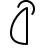
strö-
markör
vink-
markör
böjs-
markör
Kantmarkörerna används för att beskriva handens orientering i rummet. Utan en kantmarkör antas en handen vara vänd så att antingen handflatan eller handryggen är vänd bortåt i bild, med en kantmarkör är det istället den markerade sidan av handen som är vänd bortåt.
Kantmarkören visar att en av handens kanter är vänd bortåt (istället för handflata/handrygg) relativt tecknets perspektiv i skriften. (Det betyder nedåt i neutrala läget, framåt i framåtperspektivet och, i profil åt den bortre kroppshalvan – dvs åt vänster om tecknet avbildats från höger [högerhänt tecknare], och höger om tecknet avbildats från vänster [vänsterhänt tecknare].)
Gångjärns- och vridmarkörerna används för att beskriva handledsrörelse.
Böjs-, fladder-, skak-, strö-
och vinkmarkörerna visar fingerrörelse.
’vem’
| profil |

|
| framåt |
Neutrala läget är den position där ett tecken utförs i om den inte har någon specifik lägessymbol. Tecken i neutrala läget avbildas ovanifrån (som om den som tecknar tittar ner på sina egna händer). Det betyder att en rörelselinje uppåt på pappret motsvaras av en rörelse framåt i verkligheten, och att handflatorna är vända antingen uppåt eller nedåt om inget annat sägs. (För att markera att en rörelse sker vertikalt används en vertikalmarkör, och för att visa att en hand är annorlunda orienterad används någon av kantmarkörerna.)
Kroppsläget kan skrivas ur två olika perspektiv: i profil och framåt. (Den enda lägessymbolen som har med fler än ett streck är halsen som har två.)
Profil – Om ett tecken har en rörelse framåt (ut från kroppen) så skrivs tecknet med en av lägessymbolerna i profil (istället för ur tecknarens eget perspektiv).
Framåt – När perspektivet är framåt används rörelselinjer precis som i neutrala läget (men utan vertikalmarkörer). Tecknet skrivs från den tecknande personens egna synvinkel (dvs högerhanden skrivs till höger, vänsterhanden till vänster, precis som för neutrala läget).
Ansiktssymbolerna
(ögonbryns-, munsymbol
och rynkad näsa) och lägessymbolen ansiktet
(i profil) kan skrivas ihop.
’ledsen’
Rynkad näsa () är den
enda symbolen som involverar näsan:
Symboler som visar ögonbrynens position och används både för skriva
känslomässiga och syntaktiska uttryck. De skrivs upptill på raden och
antingen framför ett enskilt tecken, eller (lite på sned) som en parentes
runtomkring kring ett eller flera tecken.
Sänkta ögonbryn används vid frågeordsfrågor:
Höjda ögonbryn används vid ja/nej-frågor, för att markera topik, och
frågeordsfrågor med artighetstiltal:
De övriga ögonbrynssymbolerna har ingen syntaktisk funktion utan används
för känslouttryck.
Munrörelser skrivs oftast med symbolen för nedre halvan av ansiktet, men
kan också kombineras det hela ansiktet (plus eventuella symboler
för rynkad näsa och ögonbryn). De
skrivs på ansiktets plats, lite upphöjt på raden och framför
handsymbolerna. Om det behövs skrivs flera munsymboler efter varandra. (Se
även ’Anteckningar om munbilder’.)
rynkad
näsa
Ögonbryn
höjda
sänkta

sorgsna


ett höjt
kisande

’Är du döv?’
(ja/nej-fråga)


’Vad är det för datum idag?’
(frågreordsfråga med topik)
Mun

léende

skratt

nerdragna mungipor

gråt

sammanpressade läppar

sammanpressade läppar med rörelse

läpprutt & uppblåsta kinder

sammanpressade & dragna åt sidorna

dragna åt ena sidan

uträckt tunga

tungprutt & uppblåsta kinder

insugna läppar

putande läppar (pussmun)

pussrörelse

vidöppen mun

öppen mun

putande läppar (sh!-mun)

övre tandrad

sammanbitna tänder

sammanbitna & putande

öppen mun & utsträckt tunga

vicka på tungan

tungan utstäckt åt sidan

underläpp mot övertänder

tungan mot övertänder

rundade läppar

uppblåsta & rundade läppar

insugna kinder

uppblåsta kinder

sammanbitna och dragna åt ena sidan

äckel
Kroppsrörelser skrivs som en kombination av kroppssymboler och
rörelselinjer.
nickning

huvud-
skakning
axelrörelse
Paus () – För att
markera slutet på en mening (i ett längre sammanhang) används en liten
cirkel. I kortare sammanhang (enskilda fraser tex) är det ofta tydligt var
meningen slutar och symbolen kan utelämnas.
’Jag heter Zrajm. Vad heter du?’
Jag heter zrajm. Jag är hörande, bor i Uppsala, och pluggar svenskt teckenspråk vid Stockholms universitet. Jag har tidigare pluggat datorlingvistik vid universitet i Uppsala, något som jag halkade in på efter att (via Star Trek) ha upptäckt språket klingonska (det första språk jag lärde mig helt på eget bevåg). Jag har också konstruerat flera skriftsystem för eget bruk, samt skapat ett typsnitt för teckenspråkstranskription (FreeSans-SWL) som numera används av Svenskt Teckenspråkslexikon.
Det är min förhoppning att en skriven form av teckenspråk en dag kommer vara allmängods, och att språket kommer synas på skyltar, i tidningar och böcker. (Är det inte underligt att Döva som skriver för andra Döva inte kan skriva på sitt eget modersmål?)
Mitt försök att anpassa ASLWrite till den teckenskrift som beskrivs här föddes ur min önskan att kunna anteckna på teckenspråk (utan att behöva gå omvägen över svenska) och att kunna förbättra mina språkkunskaper genom att läsa (att kunna läsa böcker har varit ovärderligt för min inlärning av nya ord och grammatik i alla språk jag lärt mig tidigare).
Mitt persontecken är (passande nog) detsamma som tecknet för
’klingon’:
’zrajm’
attityd (se diakritiska markörer: kantmarkör)
böjsmarkör (diakritisk markör)
diakritiska markörer (se fladder-, gångjärns-, kant-, skak-, vink- och vridmarkör)
fladdermarkör (diakritisk markör)
förändras (om handform) (rörelsesymbol)
förändringslinjer (rörelsesymbol)
gångjärnsmarkör (diakritisk markör)
huvud (se kroppsrörelse: nickning och skakning)
kantmarkör (diakritisk markör)
läge (se kroppsläge och neutrala läget)
mötande linjer (rörelsesymbol)
nicka (se kroppsrörelse)
orientering (se diakritiska markörer: kantmarkör)
rörelsesymboler (se flät-, omlopps-, ratt-, tur-, vertikal- och vevmarkör; fix-, kontakt- och slutpunkt; förändrings-, mötande, rörelse- och skiljande linjer)
skaka på huvudet (kroppsrörelse)
skakmarkör (diakritisk markör)
skiljande linjer (rörelsesymbol)
strömarkör (diakritisk markör)
vertikalmarkör (rörelsesymbol)
vinkmarkör (diakritisk markör)